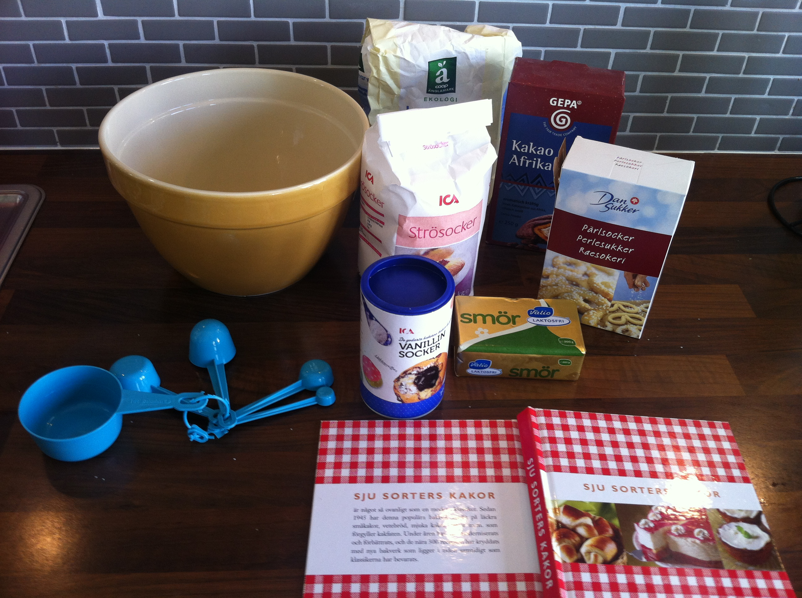

Ingredienser (ca 25st chokladbollar):
- 2 msk Kakao
- 100 g Smör
- 1 dl strösocker
- 1 tsk Vanillinsocker
- 3 dl Havregryn
- 2 msk Kallt kaffe
- Kokos eller pärlsocker till garnering 
Gör så här:
- Arbeta samman alla ingredienser till en deg.
- Forma små runda bollar.
- Rulla bollarna i kokos eller pärlsocker.
- Låt chokladbollarna stå i kylskåpet några timmar så de stelnar.